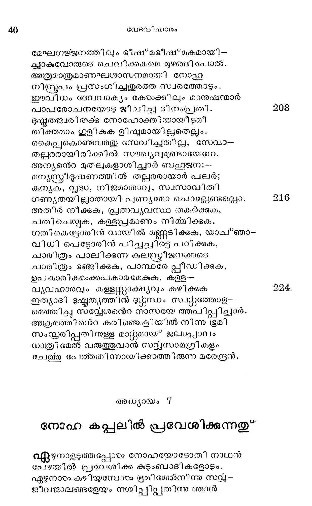
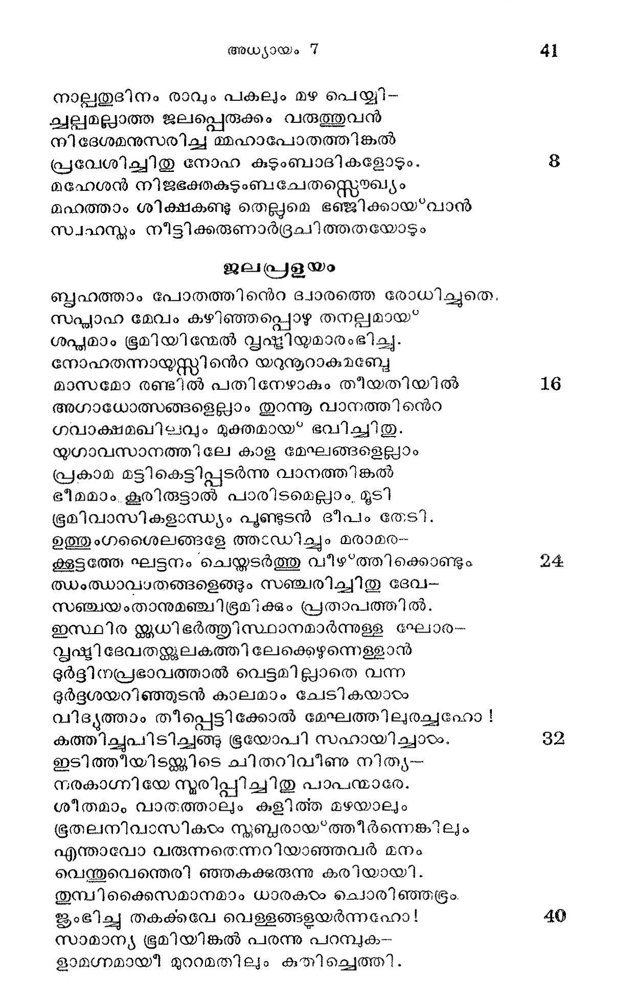
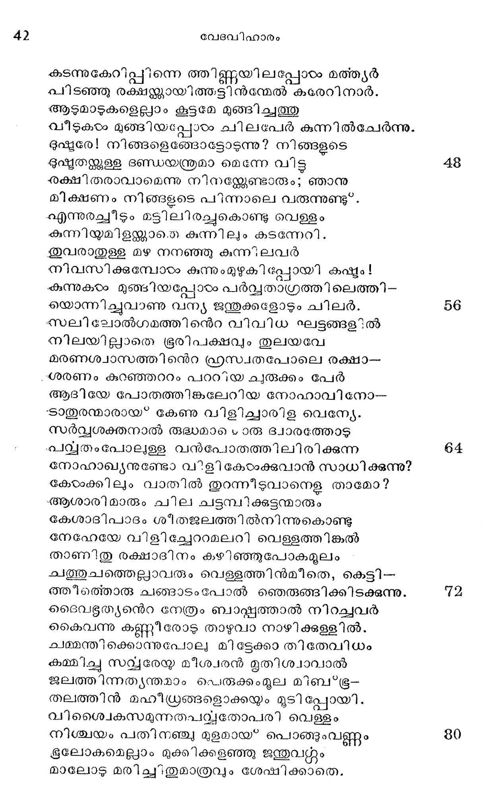

അധ്യായം 7
നോഹ കപ്പലില് പ്രവേശിക്കുന്നതു
൨ഏഴനാളടത്തപ്പോഴം നോഹയോടോതി നാഥന്
പേഴയില് പ്രവേശിക്ക കുടുംബാദികളോടും.
ഏഴുനാരം കഴിയുമ്പോടം ഭൂമിമേല്നിന്നു സവ്യ-
ജീവജാലങ്ങളേയും നശിപ്പിപ്പതിന്നു ഞാന്

നാല്പതുദിനം രാവും പകലും മഴ പെയ്യി--
ചവല്പയമല്ലാത്ത ജലപ്പെരുക്കം വരുത്തുവന്
നിദേശമനുസരിച്ച മമഹാപോതത്തിങ്കല്
പ്രലേശിച്ചിതു നോഹ കുടുംബാദികളോടും.
മഹേശന് നിജഭക്തകുടുംബചേതസ്െൌഖ്യം
മഹത്താം ശിക്ഷകണ്ടു തെല്ലമെ ഭഞ്ജിക്കായവാന്
സ്വഹസ്തം നീട്ടിക്കരുണാരദ്രചിത്തതയോടും
ജലപ്പളയം
ബൃഹത്താം പോതത്തിനെറ ദ്വാരത്തെ രോധിച്ചുതെ.
സപ്മാഹ മേവം കഴിഞ്ഞപ്പൊഴു തനല്പമായ*
ശപ്യമാം ഭൂമിയിന്മേല് വ്ൃഷ്ടിയ്യമാരംഭിച്ചു.
നോഹതന്നായുസ്സി ൫ന്െറ യറുനൂറാകുമബ്േ
മാസമോ രണ്ടില് പതിനേഴാകും തീയതിയില് 16
അഗാധോങമത്സങ്ങളെല്ലാം തുറന്നു വാനത്തിനന്െറ
ഗവാക്ഷമഖിലവും മുക്തമായ" ഭവിച്ചിതു.
യുഗാവസാനത്തിലേ കാള മേഘങ്ങളെല്ലാം
പ്രകാമ മട്ടികെട്ടിപ്പുടര്ന്നു വാനത്തിങ്കല്
ഭീമമാം. കൂരിരുട്ടാൽ പാരിടമെല്ലാം, മൂടി
ഭ്രമിവാസികളാന്ധ്യം പൂണ്ടുടന് ദീപം രേടി.
ഉത്തുംഗശൈലങ്ങളേ ത്തഃഡിച്ചും മരാമര-
കൂകൂട്ടത്തേ ഘട്ടനം ചെയ്തടര്ത്തു വീഴ*ത്തിക്കൊണ്ടും 22
ത്ധംത്ധാവാതങ്ങളെങ്ങും സഞ്ചരിച്ചിതു ദേവ-
സഞ്ചയംതാനുമഞ്ചിഭൂമിക്കും പ്രതാപത്തില്.
ഇസ്ഥിര ഇ്ലധിഭര്ത്തിസ്ഥാനമാര്ന്നുള്ള ഘോര-
വൃഷ്ടിദേവതളുലകത്തിലേക്കെഴുന്നെള്ളാന്
ദുര്ട്ദിനപ്രഭാവത്താല് വെട്ടമില്ലാതെ വന്ന
ദുര്ഭൂദശയറിഞ്ഞുടന് കാലമാം ചേടി കയാരം
വിദ്ൃത്താം തീപ്പെട്ടിക്കോല് മേഘത്തിലുരച്ചഹോ !
കത്തിച്ചുപിടിച്ചങ്ങു ഭൂയോപി സഹായിച്ചാരം. 3
ഇടിത്തീയിടയ്ക്കിടെ ചിതറിവീണു നിത്യ-
നരകാഗ്നിയേ നൂരിച്ചിച്ചിതു പാപന്മാരേ.
ശീതമാം വാത്ത്താലും കുളിത്ത മഴയാലും
ഭൂതലനിവാസികംം ന്ബ്ദരായ*ത്തീര്ന്നെങ്കിലും
എന്താവോ വരുന്നതെന്നറിയാഞ്ഞവര് മനം
വെന്തുവെന്തെരി ഞ്ഞകക്കുരുന്നു കരിയായി.
തുമ്പിക്കൈസമാനമാം ധാരകടം ചൊരിഞ്ഞടഭ്രം.
ജൂംഭിച്ചു തകക്കവേ വെള്ളങ്ങളയര്ന്നഹോ! 40
സാമാന്യ ഭൂമിയിങ്കല് പരന്നു പറമ്പുക-
ളാമഗ്നമായിീ മുറാമതിലും കുതിച്ചെത്തി.

കടന്നുകേറിപ്പിന്നെ ത്തിണ്ണയിലപ്പോടം മത്ത്യര്
ചിടഞ്ഞു രക്ഷന്ക്കായിത്തട്ടിന്ന്മേൽ കരേറിനാര്.
ആടുമാടുകളെല്ലാം കൂട്ടമേ മുങ്ങിച്ചത്തു
വീടുകഠം മുങ്ങിയപ്പോലയം ചിലപേര് കുന്നില്ചേര്ന്നു.
ദുഷ്മരേ! നിങ്ങളെങ്ങോട്ടോടുന്നു? നിങ്ങളടെ
ഭൂഷ്ടതജത്കുള്ള ദണ്ഡയന്ത്രമാ മെന്നേ വിട്ട
ഛഭക്ഷിതരാവാമെന്നു നിന്ലേണ്ടാരും; ഞാനു
മിക്ഷണം നിങ്ങളുടെ പിന്നാലെ വരുന്നുണ്ടു”.
എന്നുരച്ചീടും മട്ടിലിരച്ചുകൊണ്ടു വെള്ളം
കുന്നിയുമിളള്താതെ കുന്നിലും കടന്നേറി.
ശുവരാതുള്ള മഴ നനഞ്ഞു കുന്ന്; ലവര്
നിവസിക്കുമ്പോഠം കുന്നുംമുഴുകി പ്പോയി ഷ്യം !
കുന്നുകടം മുഞ്ജിയപ്പോരം പര്വ്വതാഗ്രത്തിലെത്തി-
യൊന്നിച്ചുവാണു വന്യ ജന്തുക്കളോടും ചിലര്.
സലിലോല്ഗമത്തിനന്െറ വിവിധ ഘട്ടങ്ങളില്
നിലയില്ലാതെ ഭൂരിപക്ഷവും തുലയവേ
മരണശ്വാസത്തിനന്െറ ഹഫ്രസ്വതപോലെ രക്ഷാ-
“ശരണം കുറഞ്ഞറീറം പററിയ ചുരുക്കം പേര്
ആദിയേ പോതത്തിങ്കലേറിയ നോഹാവിനോ--
ടാതുരന്മാരായ*' കേണു വിളിച്ചാരിള വെന്യേ.
സര്വ്വശക്തനാൽല് രഭദ്ധമാടെ രു ദ്വാരത്തോട്
ച്വ്ൃവതംപോല്ള്ള വന്പോതത്തിലിരിക്കുന്ന
നോഹാലഖ്യനുണ്ടോ വളി കോഠംക്കുവാന് സാധിക്കുന്നു?
ഭകേഠക്കിലും വാതില് തുറന്നീടുവാനെള താമോ?
-ആശാരി മാരും ചില ചട്ടമ്പിക്കുട്ടന്മാരും
കേശാദിപാദം ശീതജലത്തില്നിന്നുകൊണ്ടു
ഭനേഹേയേ വിളിച്ചേററാമലറി വെളളത്തിങ്കല്
താണിതു രക്ഷാദിനം കഴിഞ്ഞുപോകമൂലം
ചത്തുചത്തെല്ലയാവരും വെളളത്തിന്മീതെ,, കെട്ടി-
തആമീത്തൊരു ചങ്ങാടംപോൽ ഞഞെതരുങ്ങിക്കിടക്കുന്നു.
ദടൈവളൂത്യന്െറ നേത്രം ബാപ്കത്താല് നിറച്ചവര്
കൈവന്നു കണ്ണീരോട താഴുവാ നാഴിക്കള്ളില്,
കമ്മന്തിക്കൊന്നുപോല മിട്ടേക്കാ തിതേവിധം
കമ്മിച്ച സവ്യരേയ മീശ്വരന് മൃതിശ്വാവാല്
ജലത്തിന്നത്യന്തമാം പെരുക്കംമൂല മിബ*ഭൂ-
തലത്തിന് മഹീഗ്രങ്ങളൊക്കയും മൂടി പ്പോയി.
വിശ്വൈകസമുന്നതപറവ്യതോപരി വെള്ളം
നിശ്ചയം പതിനഞ്ചു മുളമായ് പൊങ്ങുംവണ്ണം
ഭൂലോകമെല്ും മുക്കിക്കളഞ്ഞു ജന്തുവും
മാലോടു മരിച്ചിതുമാത്രവും ശേഷിക്കാതെ.
